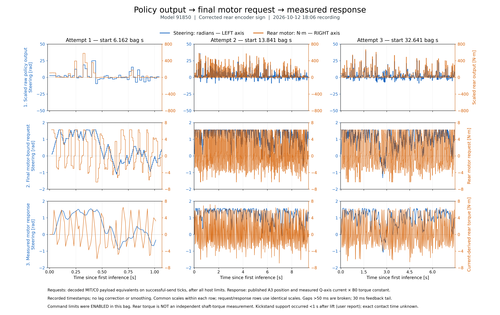

Three attempts, three stages; steering radians on left axes, rear torque N·m on right axes.
PNG · SVG · PDF · Data definitions · Provenance
2026-10-12 18:06, model 91850; command limits were enabled. Rear measured torque is current × B0, not independently measured shaft torque. The user reports early kickstand contact; persistent lean is not successful balancing.
